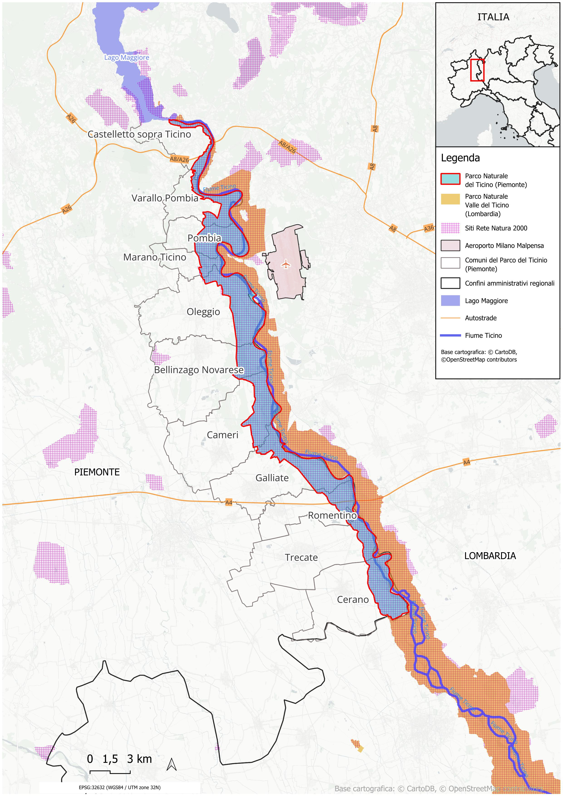
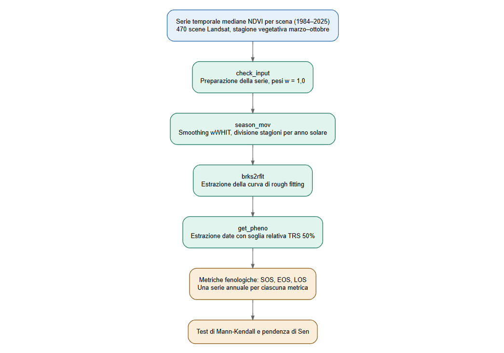
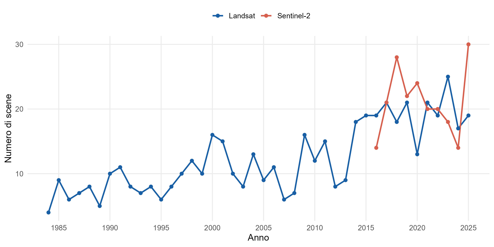
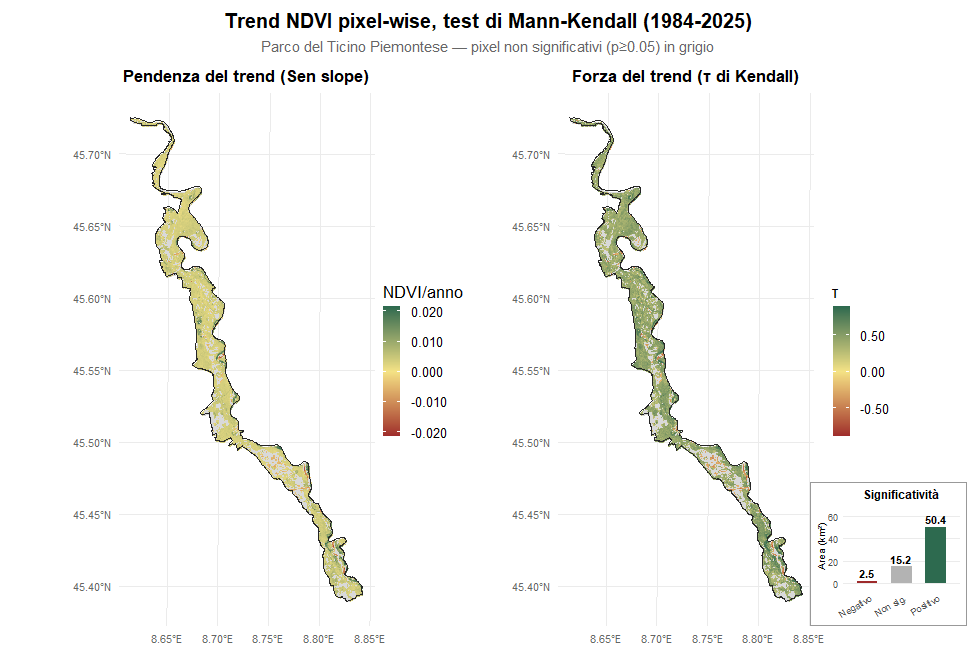
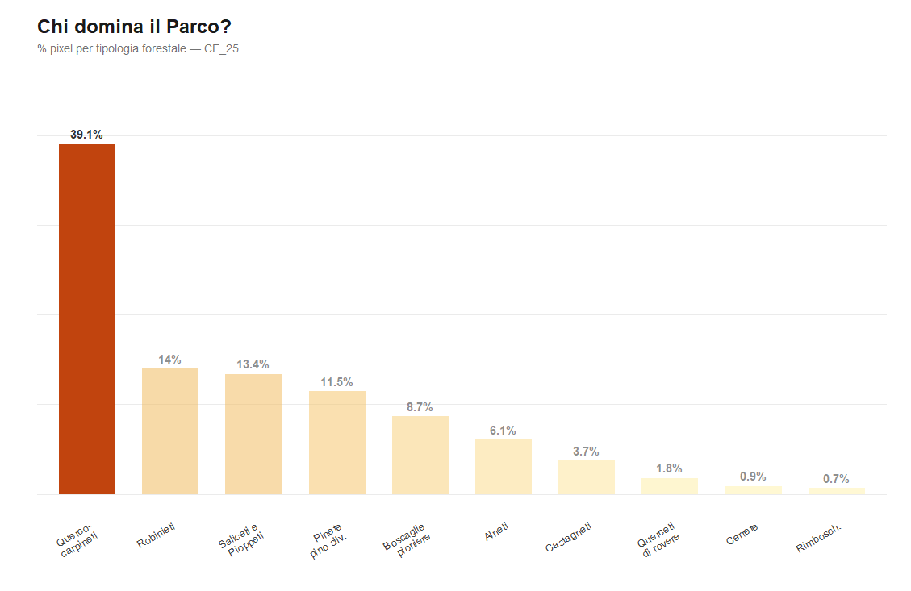
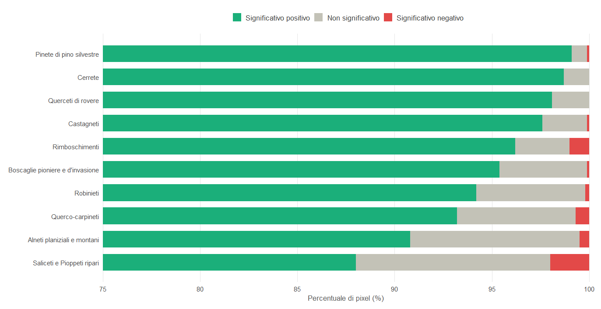
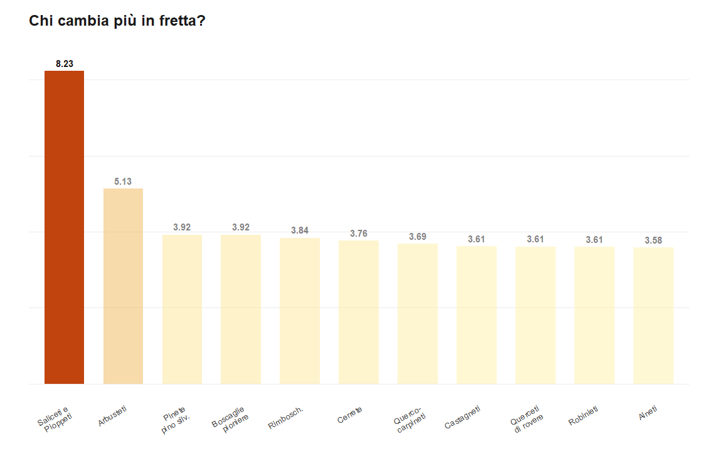
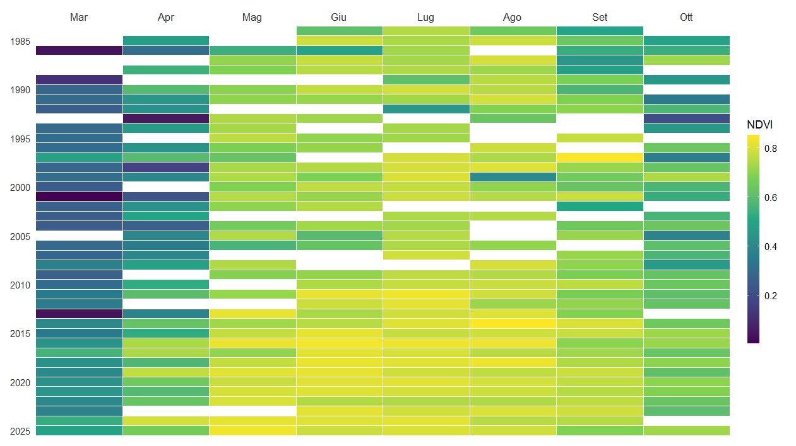
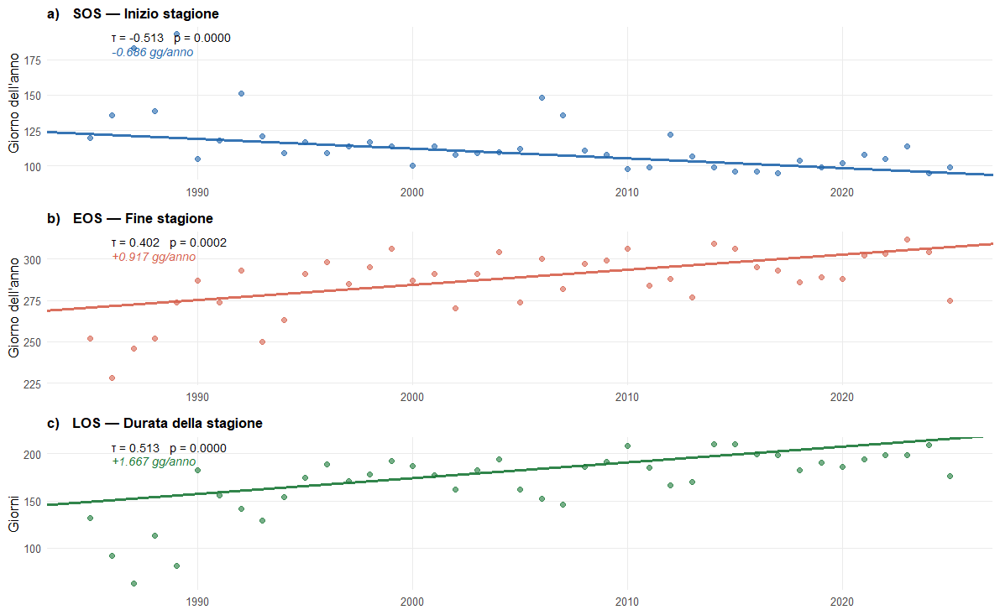

Analisi del trend e fenologia tramite serie storiche Sentinel-2 e Landsat
Il Parco Naturale del Ticino Piemontese, parte dell'area protetta fluviale più estesa d'Europa e incluso nella Rete Natura 2000, è situato a ridosso dell'aeroporto di Malpensa, il cui traffico è cresciuto da 3,5 a oltre 31 milioni di passeggeri annui tra la metà degli anni '90 e il 2025. Le emissioni del ciclo di atterraggio e decollo (LTO) sollevano interrogativi sulla salute della vegetazione dell'area protetta.
Il lavoro, sviluppato in collaborazione con ENEA nell'ambito del Master GIScience dell'Università di Padova, analizza la dinamica temporale della vegetazione integrando due dataset satellitari complementari: Sentinel-2 ad alta risoluzione spaziale (2016–2025) e Landsat con oltre quarant'anni di profondità storica (1984–2025). L'obiettivo è verificare la presenza di trend significativi nel vigore vegetativo e caratterizzarne la distribuzione spaziale e la componente fenologica.

Sono state elaborate 625 scene Landsat (Collection 2 Level-2, sensori TM/ETM+/OLI/OLI-2) e 377 scene Sentinel-2 L2A. Dopo i filtri di qualità — copertura nuvolosa ≤10% e almeno il 70% di pixel validi sull'area del Parco — sono risultate 470 scene Landsat e 299 Sentinel-2 utili per l'analisi.
I trend sono stati valutati con il test non parametrico di Mann-Kendall e la pendenza di Sen, con correzione di Hamed e Rao per l'autocorrelazione seriale. L'analisi pixel-wise ha prodotto raster di τ, p-value e Sen slope per l'intera superficie del Parco. Le metriche fenologiche (SOS, EOS, LOS) sono state estratte tramite il pacchetto R phenofit.








I risultati sono coerenti con il fenomeno di greening globale documentato negli ultimi decenni, ma non permettono di evidenziare un impatto specifico dell'aeroporto di Malpensa sulla vegetazione del Parco. L'analisi fenologica rileva un anticipo del SOS e un posticipo dell'EOS, con conseguente allungamento della stagione; questi trend non risultano però separabili dalla sistematica crescita del numero di scene Landsat disponibili nel tempo.
Il lavoro costituisce una caratterizzazione di base utile per un monitoraggio satellitare continuativo, da integrare in futuro con variabili climatiche locali e rilievi in situ.